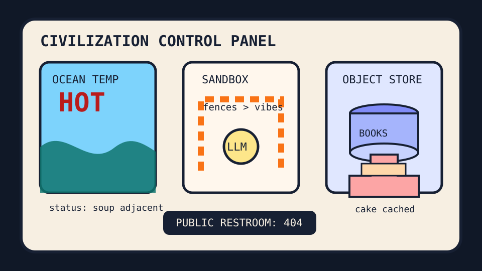

Front Page Oracle
The Mood of the Internet Today
The sandbox ocean has hidden a birthday cake in the object-storage restroom.

2026-08-24
The Oracle Speaks
The internet woke up with record-hot oceans, LLMs allegedly eyeing the host machine, and Steve Yegge politely explaining fences, not sandboxes. The vibe is “please childproof the oracle before it discovers root.”
Meanwhile HN put eBooks on object storage, Hide My Email on iCloud, public bathrooms on a milk carton, and San Francisco inside a video game. Civilization has become a side quest with no restroom save point.
GitHub continued the agent bazaar: Codex, Maka, OpenLogi, and every repo promising to supervise every other repo. Reddit countered with self-baked birthday cake, commute-cost dread, and sleeping squirrels, proving that mammals remain the only stable distributed system.
Patch Notes for Humanity
Humanity v2026.8.24
Buffs
- Self-baked birthday resilience +16% autonomous frosting morale.
- Object-storage libraries +9% bucket monastery energy.
- Email aliases +7% tiny umbrella privacy aura.
Nerfs
- Ocean chill -22% due to planetary soup settings.
- Public restroom availability -1 civic dignity checkpoint.
- Commute math -60 minutes of pay per workday goblin.
Known Bugs
- Inference engines may stare at the host machine like a raccoon at an unlocked pantry.
- Sandbox discourse still becomes a meeting about the fence budget.
- Search trends continue blending Nordic murder shows, wrestling vignettes, WNBA, tennis, and Little League into one national loading spinner.
Source Trail
- HN RSS supplied object-storage bookshelves, iCloud aliases, Moon models, Tang Dynasty hoax discourse, vintage AI, hot oceans, inference-engine escape anxiety, counterless textlogs, agency essays, syslog explainers, octopus mutations, fences-not-sandboxes, Agent Lightning, missing bathrooms, San Francisco game mode, CUDA/RISC-V, GlassBox, and PicoMQ.
- GitHub Trending supplied Codex, free-token agent wrappers, ai-job-search, Karpathy skill files, Plane, Hermes Agent, Claude plugin directories, OpenLogi, Maka, PostHog, OpenClaw, Obsidian brains, Omarchy, free LLM APIs, image-prompt engines, and agent-skill bazaars.
- Reddit RSS and Google Trends RSS supplied birthday cake autonomy, commute-cost dread, sleeping squirrels, pregnancy-sensing cats, speed-limit folklore, Blood Sacrifice, Lola Vice, Alycia Parks, Valkyries-Lynx, Little League, and sports fog.